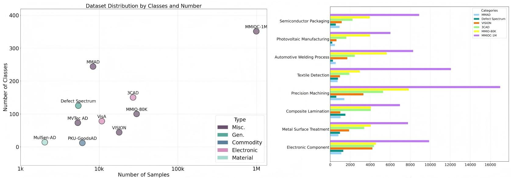
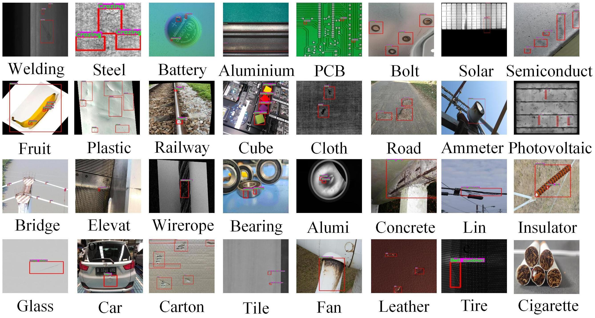
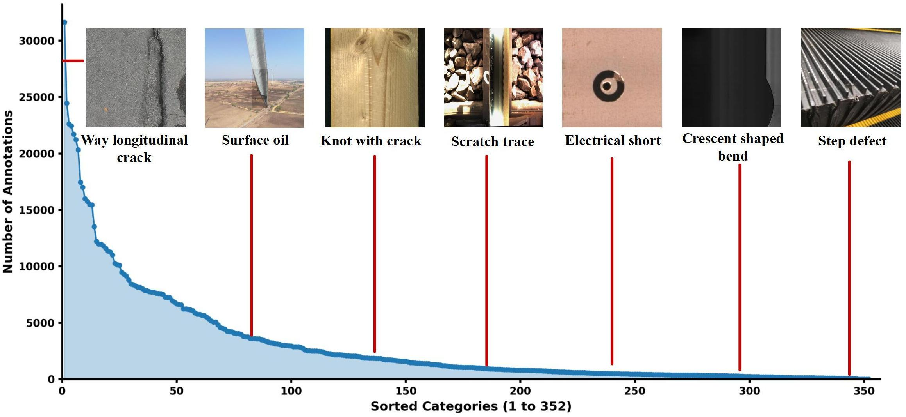

RESEARCH PROJECT · 2026
Unification of Closed–Open
Industrial Detection Scenarios
MMIOC-1M · RTVPNet
The Hugging Face release is the curated 334-class subset. It becomes public after its upload is verified.
One benchmark for open and closed detection
Industrial defects vary across products, scales, and manufacturing environments. MMIOC-1M brings open-vocabulary and closed-set detection into one benchmark. RTVPNet adapts visual features to the industrial domain and refines prompts through visual-text interaction.

Different products, different defects
The original project figure spans materials, components, infrastructure, and packaged goods. Each domain changes the visual cues needed to recognize a defect.

RTVPNet
RTVPNet combines expert-assisted domain projection, energy-based selection of refined visual prompts, and bidirectional interaction between visual and text features. The paper applies these features to detection, grounding, and visual question answering.

Domain projection
Adapt general visual features to industrial images.
Refined visual prompts
Select informative regions using energy-based scores.
Visual-text interaction
Let image details and class semantics refine each other.
Long-tail industrial categories
Many defect types have far fewer examples than common categories. This imbalance is one reason open-scene generalization remains difficult.

Reported RTVPNet performance
Results below are from the paper's original MMIOC-1M open and closed protocols. They are not evaluations on the curated Hugging Face subset. Values are percentages.
| Model | Open AP ↑ | Open AP50 ↑ | Closed AP ↑ | Closed AP50 ↑ |
|---|---|---|---|---|
| RTVPNet-S | 14.9 | 26.7 | 36.7 | 60.7 |
| RTVPNet-L | 17.4 | 30.7 | 41.3 | 64.9 |
Source: paper Tables III and V. Open and closed values use different evaluation splits.
Data, paper & code
The Hugging Face dataset contains the active train/validation subset: 382,643 images, 942,306 COCO boxes, and 334 classes. It is separate from the original 1M+ sample benchmark. Images identified as having potential conflicts of interest were removed with their annotations before this release.
 HUGGING FACE · DATASET
HUGGING FACE · DATASETThe code archive contains environment-specific data and GPU paths. The curated Hugging Face repository becomes public after upload verification.
Cite MMIOC-1M
@misc{zhang2026mmioc,
title={Unification of Closed-Open Industrial Detection Scenarios: New Large-Scale Benchmarks, Challenges and Baselines},
author={Zhang, Zekai and Zhang, Jinglin and Chen, Qinghui and Li, Gang and Chen, Da and Jing, Shuainan and Wang, He and Li, Dagang and Liu, Cong and Bai, Cong and Chen, Shengyong},
year={2026},
eprint={2606.07953},
archivePrefix={arXiv},
primaryClass={cs.AI}
}